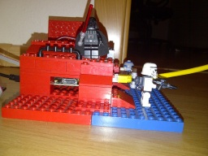
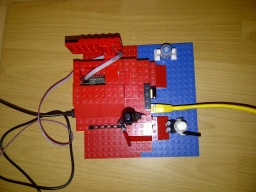
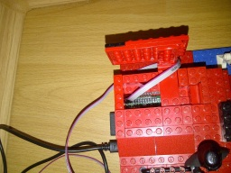

IWS-11A-RP: Imperial Weather Station on Raspberry Pi
Welcome, citizen!
We are proud to present the latest innovation in imperial weather-control technology. Developed by Sienar Fleet Systems on top of a Raspberry Pi super computer, Lego technology and an SHT-21 weather sensor, this weather station provides accurate and reliable measurements on a planetary scale.
Click to enlarge:



Notice the SHT-21 sensor that is connected to the main unit via the gray cable that is led through the upper hatch.
What does it do?
- The IWS-11A-RP records a tuple of metered values [temperature, humidity] every 60 seconds and stores it for analysis purposes
- The IWS-11A-RP offers a TCP interface for starting and stopping the measurement
What does it not (yet) do?
- The IWS-11A-RP does not yet provide HTML/Javascript-based analysis of the recorded data. This functionality is under development and will probably be implemented using the Python programming language, while the existing backend processing functionality will continue to be implemented in the Ruby programming language
- The IWS-11A-RP does not yet offer a REST API for retrieving measurement values and/or managing the application
Browse the source code.
Released under the Apache License
The Banner of the Galactic Empire has been copied from Wikimedia Commons, where it is provided under the Creative Commons Attribution-Share Alike 3.0 Unported license.
{kind=link}
{kind=link}
{kind=link}
{kind=link}